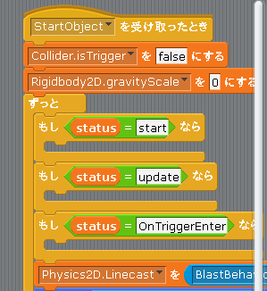

Scratch is developed by the Lifelong Kindergarten Group at the MIT Media Lab. See http://scratch.mit.edu
スクリプト
次は中央のスクリプト欄を見て下さい。
ここに表示されているブロックは Unity でいう「スクリプト」に相当します(図1)。
図1: スクリプト

Unity と同様に scratch2unity でもスクリプトによって各ゲームオブジェクトの動作が決まりますが、Unity では C# を使ってスクリプトを作成するのに対して、scratch2unity ではプロックを配置してスクリプトを作成するという違いがあります。